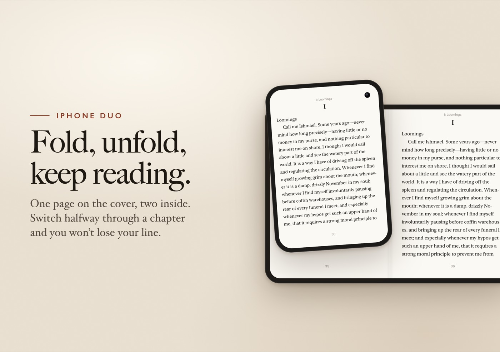
Your line stays put.
Pagination is anchored to where you are: the line at the top of the cover page is the first line of the right-hand page after you unfold, and the other way round when you close it.
An open-source ebook reader
Reads like a paperback. Works with the books and servers you already have.
I wanted an ebook reader that felt like reading a paperback and worked with the EPUBs and the home server I already had, so I made one. Sheafs is native through and through, with no ads, no tracking and no account to sign up for. The code’s on GitHub under the MIT license.
For iPhone and iPad on iOS 27.1 and later. Made for the foldable iPhone Duo.
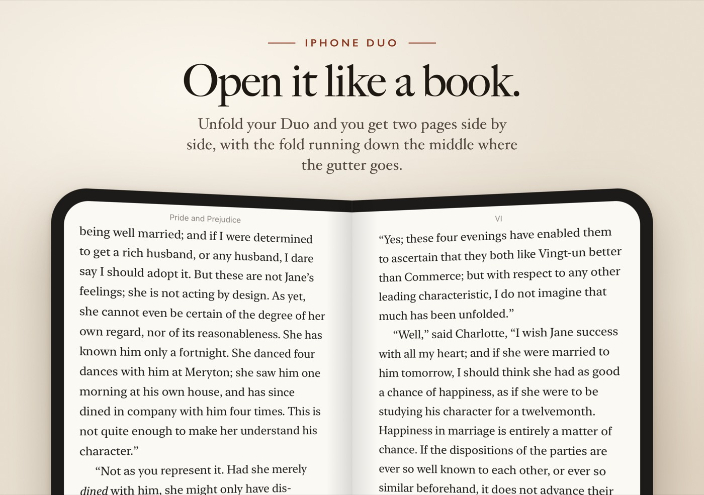
Made for iPhone Duo
Closed, you read one page on the cover screen. Open it up and you get a two-page spread, with the fold running down the middle like the gutter of a real book.

Pagination is anchored to where you are: the line at the top of the cover page is the first line of the right-hand page after you unfold, and the other way round when you close it.
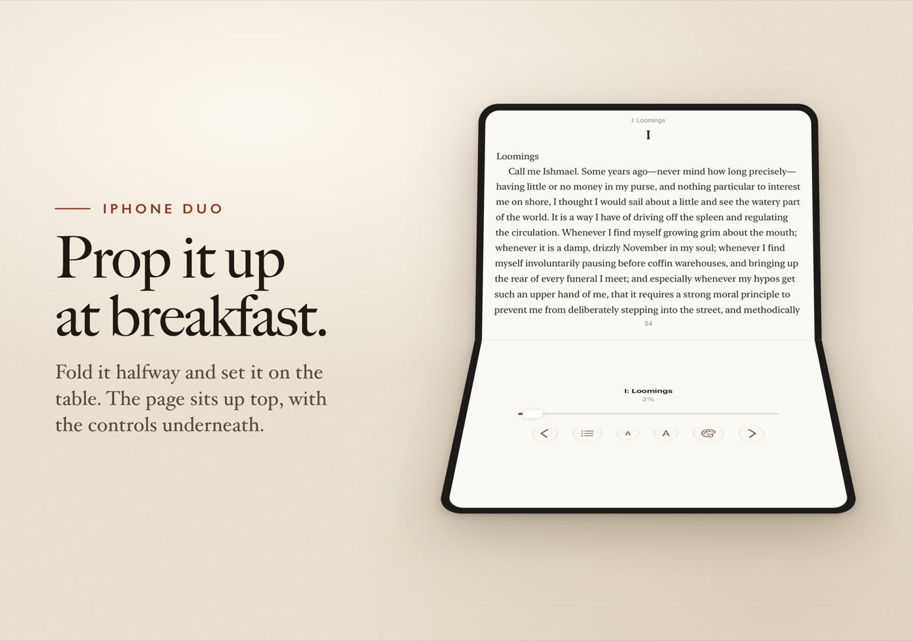
Half open on the table, the page sits on the upper half and the progress bar, page buttons, contents and appearance controls live on the lower half, under your thumbs.
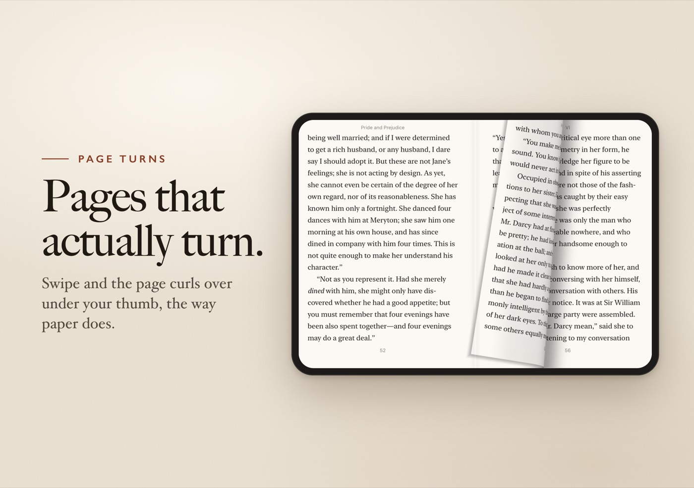
The sheet bends under your finger, the bend travels to the spine and the leaf falls over, with its shadow on the page beneath. A spread turns like a book. There’s a plain slide too.
What you get
Sheafs reads EPUB 2 and EPUB 3. Import them from Files, AirDrop or the share sheet, or point it at an OPDS catalog and download straight from it. If your library lives on a home server, add its feed and browse the whole collection from the couch. Public catalogs work too: Project Gutenberg has one.
Sheafs speaks KOReader’s sync protocol, so you can run your own sync server and pick up where you left off, whether you were last reading in Sheafs or in KOReader.
Your books are laid out in proper pages, with good type and decent margins, a running head and a page number. Swipe to turn and the page curls over. If that’s a bit much, there’s a plain slide too, or you can turn pages with the volume buttons.
Nine typefaces, including New York, Georgia, Palatino, Charter and Iowan Old Style, then fiddle with size, spacing and margins until it looks right. Justified or ragged, hyphenated or not.
There’s a paper theme, a sepia one and a dark one for late nights, or it can follow your phone’s light and dark mode.
Five highlight colors, underlines, and your own notes, all shareable as Markdown when you’re done. A Home Screen widget gets you back to whatever you were reading.
Screens
Any iPhone gets the one-page reader. Turn an iPad sideways for a two-page spread, like a book lying open on the table.
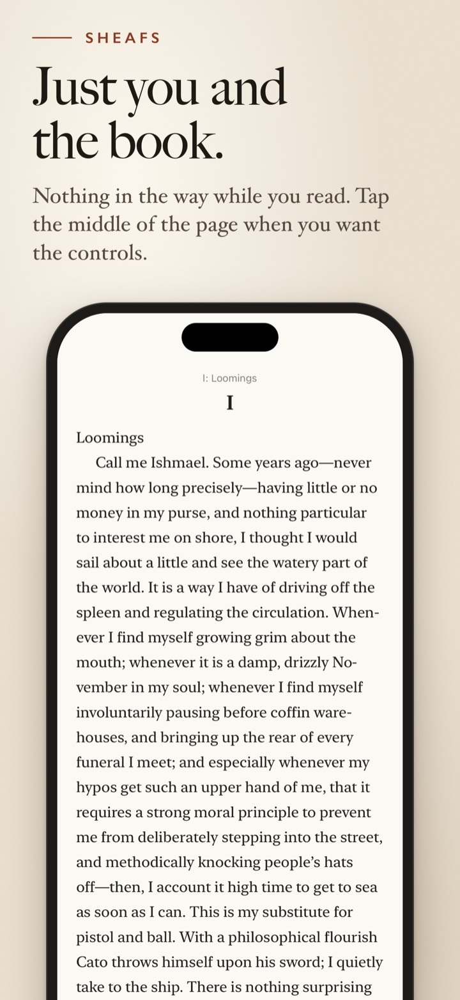
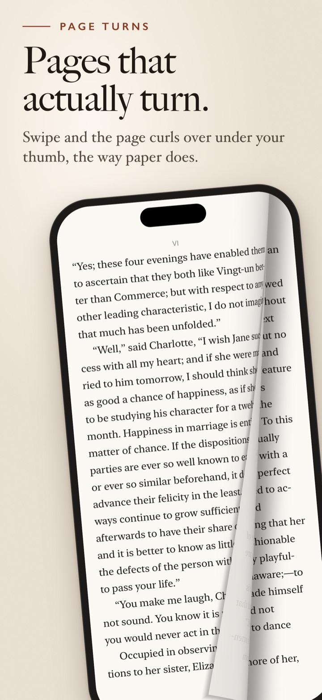
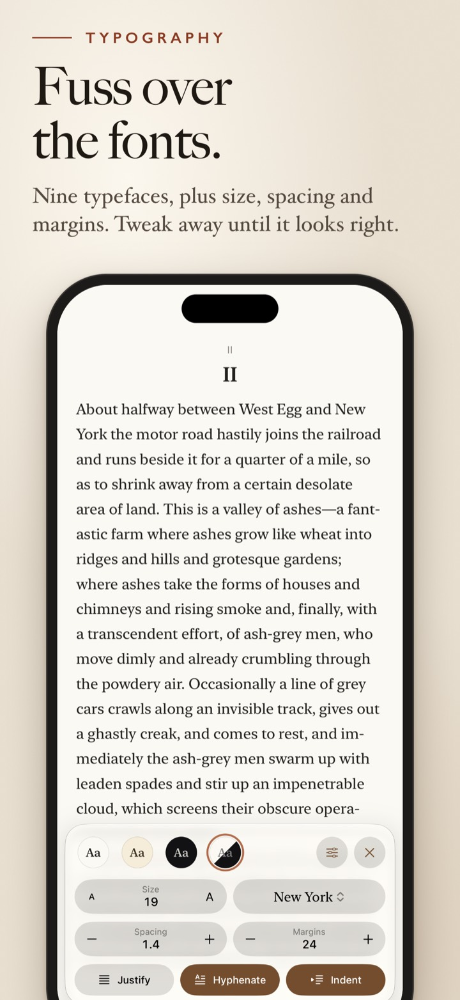
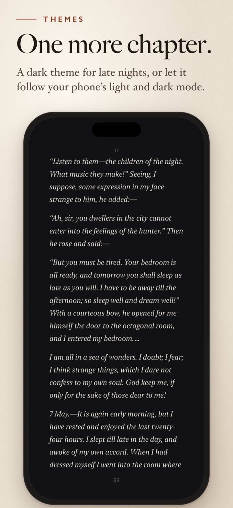
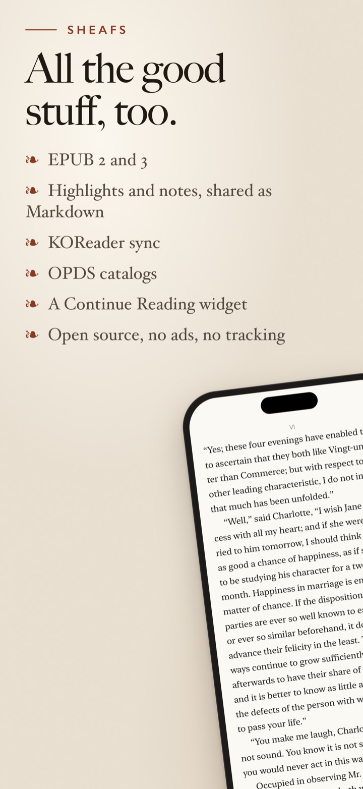
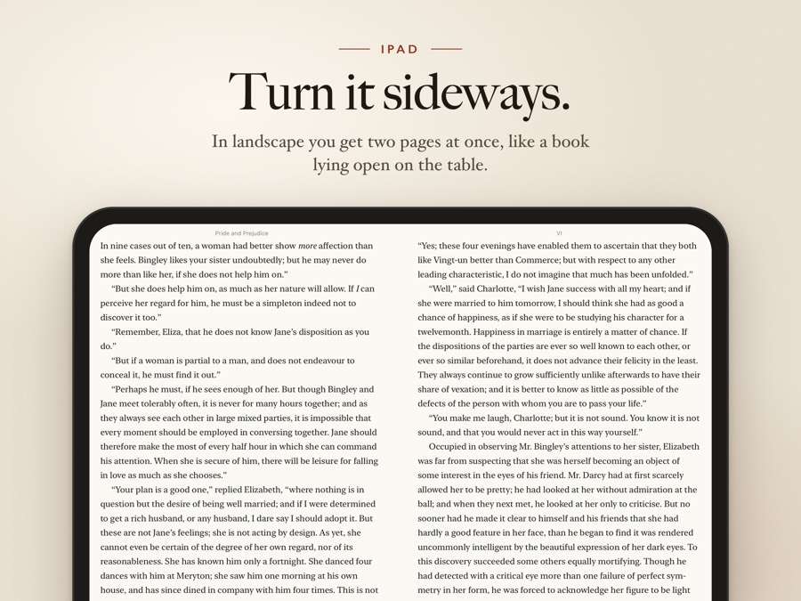
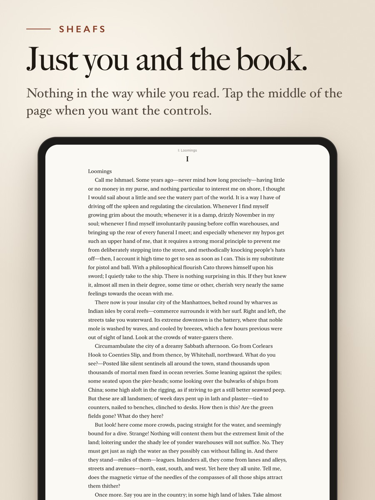
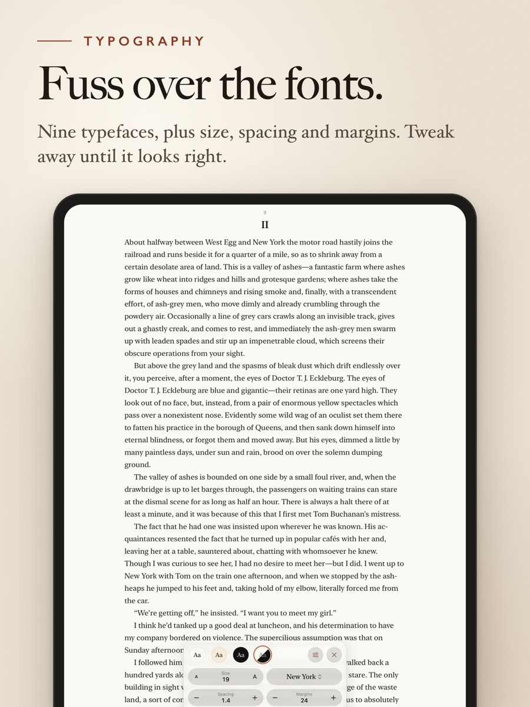
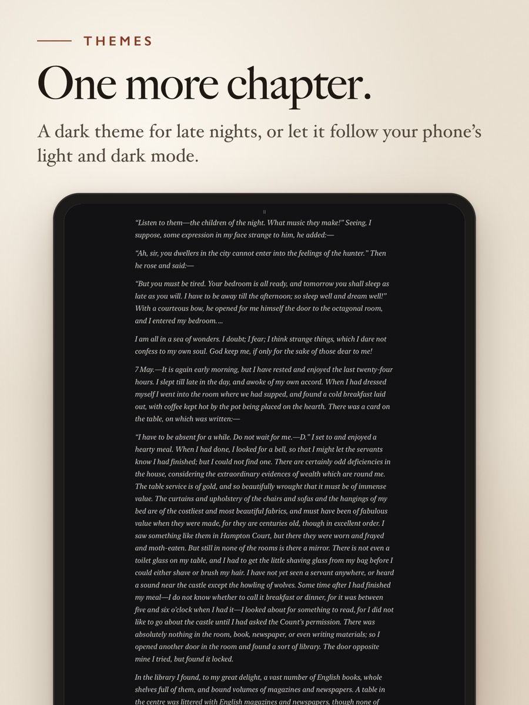
Open source, no strings
Sheafs collects no data. No accounts, no analytics, no advertising, and nothing goes to its developer. The only servers it ever talks to are the catalog and sync server you add yourself.
Import EPUBs from Files, or add your library’s OPDS feed in the Catalogs tab and download from there.
Optional. In Settings, enter any KOReader sync server (kosync) and your position follows you between readers.
Tap the edges or swipe to turn. Tap the middle when you want the controls. That’s it.